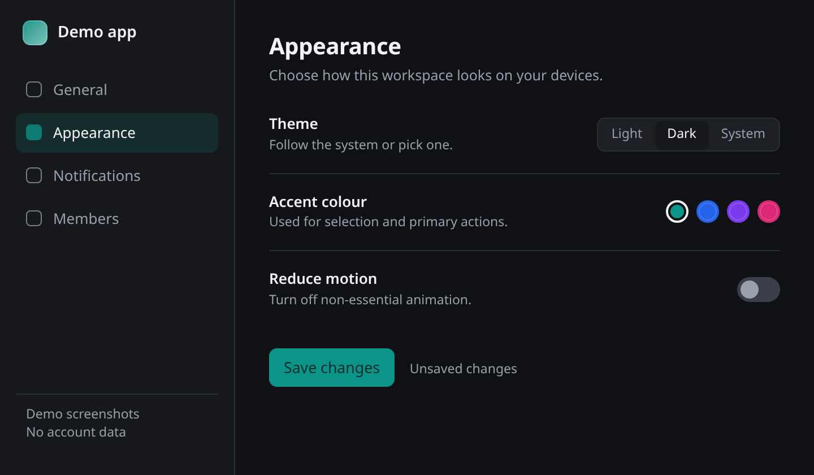
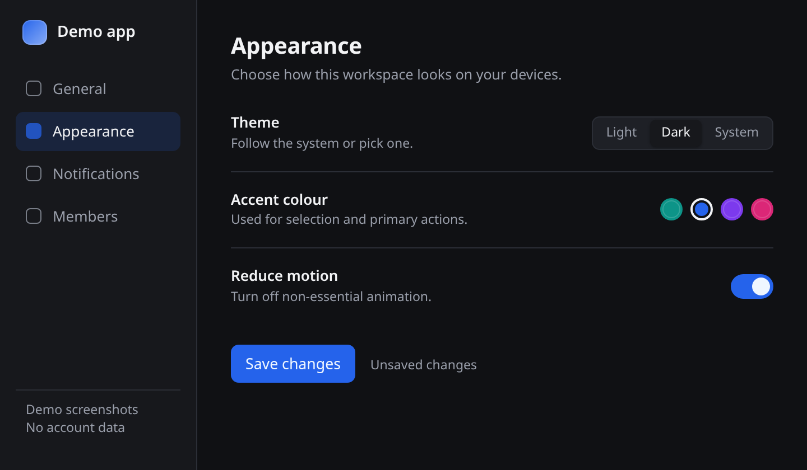
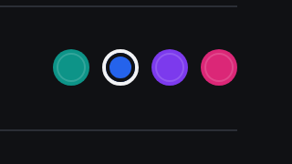
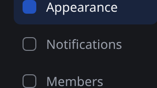
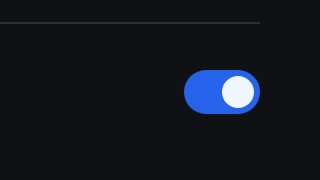

HTML Render showcase · 01
Settings review
Two versions of the same screen, one comparison. Switch views, then pick a numbered difference to see the detail. Demo screenshots


Accent moved from teal to blue
The selected navigation item, the active swatch and the primary button all follow one accent token. A palette change is one edit, not a hunt through components.
The sidebar is 32px narrower
The same navigation still fits at 176px. The content column gains room without changing labels or hiding a section.
Reduce motion is on in the after state
This page's own transitions are disabled under that preference too. The demo still shows every value when scripts or animation are unavailable.



Local controls only. The images come from the workspace and are inlined at publish time; no remote assets. A click on an inlined image can ask the host viewer to open it.